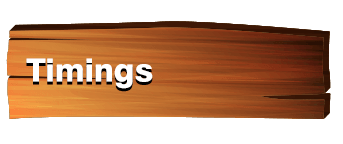

- Jijamata Udyaan formerly called Ranichi Bagh (meaning Queen's Gardens) after the original British name Victoria Gardens, and now also known as Veermata Jijabai Bhonsle Udyan, is a zoo and garden located at Byculla, in the heart of Mumbai, India.
- jijamata udyan is full of lush green trees and famous for the species of birds and animals easily seen once you enter Jijamata udyan.
- With the green trees is a botanical garden in the pathway inside the zoo with beautiful and wide range of flower plants, herb plants and other new species of plants.
- One can visit the different gardens inside the zoo like Zoo Botanical garden, Tactile Garden, Medicinal Garden
- Childrens can get to see various animals round them.
- Snake section has been repair for eternity and birds section has gone under repairs now.
- People who visit this place are mostly couples looking for some privacy.

- 09:00 am to 06:00 pm(Wednesday Closed)
- Rs. 5/- For Adults
- Rs. 2/- For Childrens
- One can visit Jijamata Udyaan any time except Wednesday.
By Road:
- Jijamata udyan (Byculla Zoo) is exactly opposite byculla station, just few minutes walk and Byculla station in central railway route is the perfect to get down at.
- For western railway route, Nearest station is Mumbai Central station is the best place, take a taxi which will reach in next 10 to 15 minutes.
By Rail:
- One can get down at Byculla station and from here just few minutes walk and you are at Jijamata Udyaan.